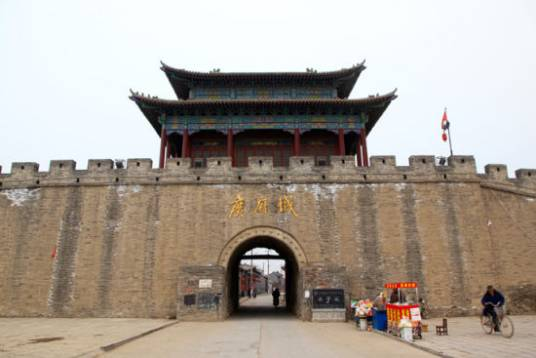
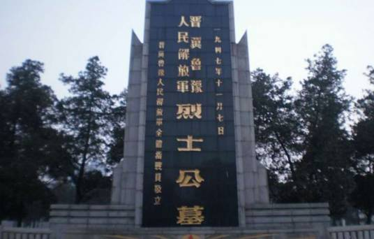
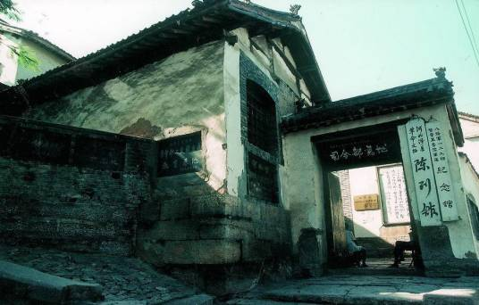
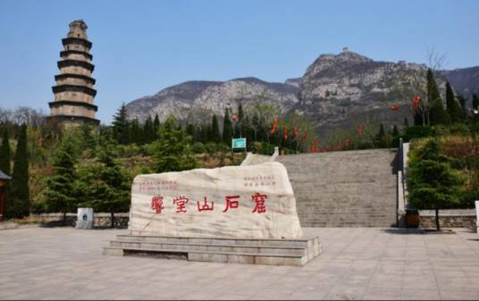
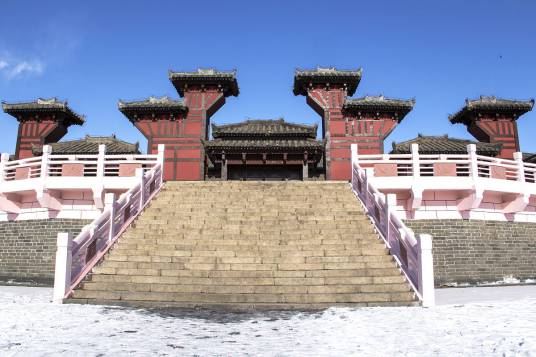

著名建筑
娲皇宫，位于河北省邯郸市涉县中皇山上，占地面积5平方公里，由服务区、补天园、补天湖、娲皇宫和补天谷五个园区组成，是神话传说中女娲“抟土造人、炼石补天”的地方，是我国建筑规模最大、肇建时间最早的祀奉人类始祖女娲的古代建筑群。
娲皇宫始建于北齐时期，初为北齐文宣帝高洋所建离宫，初开三石室，雕数尊神像。后经历代修葺续建，娲皇宫现今占地面积达76万平方米。如今建筑多为明清时期，而北齐遗迹，仅留石窟与摩崖刻经，共6部，是中国现存摩崖刻经中最早、字数最多的一处。
每年农历三月初一至三月十八，为当地的庙会，女娲祭典之日。是时全国多地的人以及海外华侨前来祭拜华夏族人文先始，是中国规模最大、肇建时间最早、影响地域最广的奉祀女娲的历史文化遗存，被誉为“华夏祖庙”，为全国祭祖圣地之一。
1996年娲皇宫列为全国重点文物保护单位，2015年10月15日被评为国家AAAAA级旅游景区， [1]2012年娲皇宫景区列为国家级风景名胜区。
永年广府城，也称永年城 、广府古城、古城、广府城、水城 、太极城 、水中城 ，位于河北省邯郸市东北45华里滏阳河畔的永年洼里，距离县政府驻地临洺关25公里。 [2]因历史上曾为广平府治所，故称广府，自古人称北方小江南，现为河北省重点文物保护单位。
广府城有二千六百多年的历史。隋末夏王窦建德和汉中王刘黑闼曾在此建都，以后为历代王朝的郡、州、府、县治所。这里有气势宏伟、古朴沧桑的古城墙；有端庄秀丽、结构独特的弘济桥，号称赵州桥的“姊妹桥”；有历经风雨、引人探究的毛遂墓；有布局合理、建造考究的西八闸——现仍在为农业生产服务的明代水利设施；有建于隋唐时期、用于战略防御的藏兵洞等。
现存城墙为明代时重修，高12米、宽8米，城内面积1.5平方公里。城墙保存基本完整，总周长有九里十三步之说。 广府古城还是一座水城，周围是万亩洼地和一望无际的芦苇，四面环水，具有北方罕见的秀美水乡风光。围绕古城的是一条顺畅贯通的护城河，护城河外是面积达4.6万亩的永年洼，地势北高南低，水能自流，洼淀常年积水，历史上是著名的天然水产养殖场。 永年洼老潭淀区和护城河等深水水域将实施鲫鱼、河虾、河蟹人工增殖放流，在洼淀浅水区栽培芦苇、莲藕、芡实等水生植物，广府古城将再现“水中城”的美景。
这里还是杨式、武式太极拳发祥地。是集古城、水城、太极城于一体的名城，这些特点更是其他古城无法比拟的。杨式太极拳创始人杨露禅、武式太极拳创始人武禹襄的故居保存完好。
晋冀鲁豫烈士陵园，位于晋冀鲁豫四省的交界城市——河北省邯郸市邯山区陵园路，是新中国成立后第一座大型烈士陵园。1946年3月奠基，1950年10月落成。陵园占地320亩，分南北两院，是我国建筑最早、规模最大、老一辈无产阶级革命家的题词和碑文最多的烈士陵园。国务院批准为第一批全国重点烈士纪念建筑物保护单位。
该烈士陵园是为了纪念在抗日战争中牺牲的晋冀鲁豫四省的英雄们，晋冀鲁豫烈士陵园已成为重要的红色教育基地，每年清明节时会有来自四个省份的人前来祭拜。
晋冀鲁豫边区政府从1937年冬开始创建，到1948年8月与晋察冀边区合并，有着11年光辉战斗的历史。
在此安葬着副参谋长左权、冀南银行行长高捷成（我国金融事业奠基者）、《新华日报》社社长何云、北方局政权工作部秘书张衡宇、冀南银行第二任行长赖勤及其夫人、中共北方局军委书记张兆丰、朝鲜义勇军领导人陈光华和石鼎、抗日英雄范筑先等烈士。
八路军一二九师司令部旧址位于河北邯郸涉县，由一二九师司令部旧址、将军岭和一二九师陈列馆三部分组成，占地面积三百亩，2013年顶峰国际旅游景区规划项目。
抗日战争时期，涉县是边区根据地的腹心地、首府县，地处华北抗战前哨，为华北抗战战略要地，八路军129师在刘伯承、邓小平等师首长率领下，临危受命、东渡黄河、挺进太行，运筹涉县赤岸村，浴血千里太行山，打响了抗日战争中长生口、神头岭、响堂铺和解放战争中上党、平汉等著名战斗、战役，曾有一百一十多个党、政、军、财、文等机关单位在涉县驻扎长达五年之久。
2017年1月，国家发改委发布了《全国红色旅游经典景区名录》，八路军一二九师司令部旧址入选中国红色旅游经典景区名录。
响堂山石窟，又称响堂寺石窟，坐落在河北省最南端的邯郸市峰峰矿区。属全国首批重点文物保护单位。
响堂山石窟最初开凿于北齐时代（公元550—577年）。以后，隋、唐、宋、元、明各代均有增凿。尚有石窟16座，4000多尊雕像，石窟均营凿在山清水秀、环境优美的鼓山最优质的石岩中。石窟幽深，人们在山洞里击掌甩袖，都能发出宏亮的回声，故名“响堂”。
响堂山石窟分南北两处，相距约15公里。因石窟群在山腰，人们谈笑、拂袖、走动均能发出铿锵的回声，传名响堂山石窟。现存石窟16座，摩崖造像450余龛，大小造像5000余尊，还有大量刻经、题记等。
响堂山石窟是河北省现已发现的最大的石窟，也是国务院第一批公布的国家重点文物保护单位，现为国家AAAA级景区，四星级森林公园。2012年11月份，响堂山风景名胜区晋升国家级风景名胜区。
铜雀台位于河北省邯郸市临漳县城西南18公里处（邺城镇，原名香菜营乡），是全国重点文物保护单位。
汉末时期，曹操击败袁绍后营建邺都，修建了铜雀、金虎、冰井三台，即史书中之“邺三台”， 是建安文学的发祥地，台高10丈，有屋百余间，历代名人题咏甚多而名。临漳古称邺，西晋为避愍帝司马邺讳，将邺城易名“临漳”，因北临漳河而得名。
三国时期，邺城作为曹魏、后赵、冉魏、前燕、东魏、北齐六朝都城，居中国北方政治、经济、文化、军事中心长达四个世纪之久，创造了辉煌灿烂的历史文化，使临漳享有“三国故地、六朝古都”之美誉。